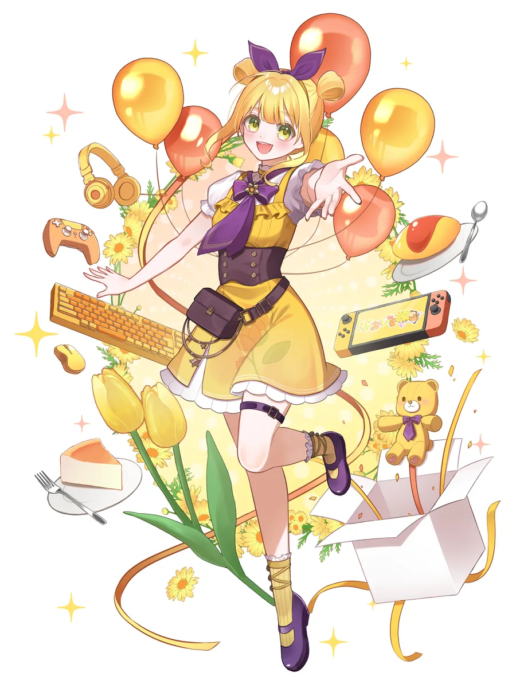

なおぴを探せ
本文へ
なおぴを探せ
メニュー
PROFILE
NEWS
SCHEDULE
STREAM
SONG
LINKS
FAN ART
CONTACT
WATCH ON TWITCH ✦ WATCH ON TWITCH ✦
↗
● LIVE NOW — いますぐ見る ↗
VTuber
X
YouTube
TikTok
Twitch
なおぴを探せ
NAOPI WO SAGASE ✦ VTuber ✦ Twitch Streamer ✦ 🌷💛 ✦
NAOPI WO SAGASE ✦ VTuber ✦ Twitch Streamer ✦ 🌷💛 ✦
PROFILE
プロフィール

VTuber
なおぴを探せ
NEWS
お知らせ
VIEW MORE
→
SCHEDULE
今週の予定
STREAM
配信を見る
Twitch チャンネルへ
↗
おねがい
ORIGINAL SONG
オリジナル曲
1st Original Song
Chu♡lip
YouTube の最新動画
YouTube チャンネルへ
↗
LINKS
SNS・応援
FAN ART
ファンアート
ハッシュタグ
CONTACT
お仕事のご依頼